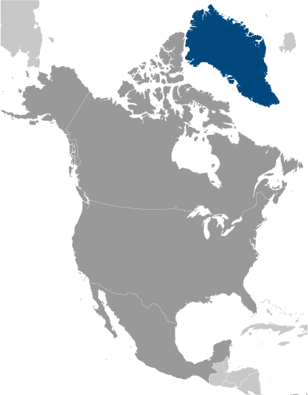
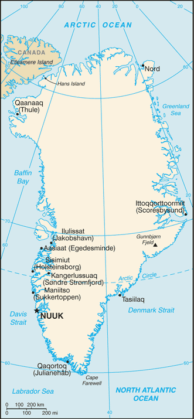
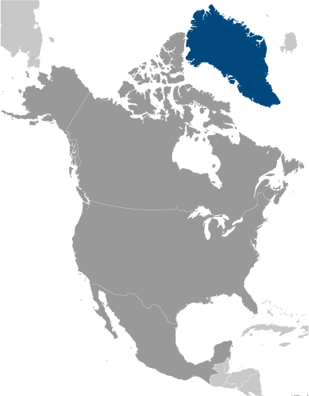
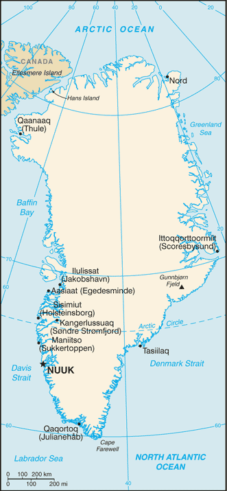

North America :: GREENLAND
Introduction :: GREENLAND
-
Greenland, the world's largest island, is about 81% ice-capped. Vikings reached the island in the 10th century from Iceland; Danish colonization began in the 18th century, and Greenland became an integral part of the Danish Realm in 1953. It joined the European Community (now the EU) with Denmark in 1973 but withdrew in 1985 over a dispute centered on stringent fishing quotas. Greenland remains a member of the Overseas Countries and Territories Association of the EU. Greenland was granted self-government in 1979 by the Danish parliament; the law went into effect the following year. Greenland voted in favor of increased self-rule in November 2008 and acquired greater responsibility for internal affairs when the Act on Greenland Self-Government was signed into law in June 2009. Denmark, however, continues to exercise control over several policy areas on behalf of Greenland, including foreign affairs, security, and financial policy in consultation with Greenland's Self-Rule Government.
Geography :: GREENLAND
-
Northern North America, island between the Arctic Ocean and the North Atlantic Ocean, northeast of Canada72 00 N, 40 00 WArctic Regiontotal: 2,166,086 sq kmland: 2,166,086 sq km (410,449 sq km ice-free, 1,755,637 sq km ice-covered)country comparison to the world: 13slightly more than three times the size of Texas0 km44,087 kmterritorial sea: 3 nmexclusive fishing zone: 200 nm or agreed boundaries or median linecontinental shelf: 200 nm or agreed boundaries or median linearctic to subarctic; cool summers, cold wintersflat to gradually sloping icecap covers all but a narrow, mountainous, barren, rocky coastmean elevation: 1,792 melevation extremes: lowest point: Atlantic Ocean 0 mhighest point: Gunnbjorn Fjeld 3,694 mcoal, iron ore, lead, zinc, molybdenum, diamonds, gold, platinum, niobium, tantalite, uranium, fish, seals, whales, hydropower, possible oil and gasagricultural land: 0.6%arable land 0%; permanent crops 0%; permanent pasture 0.6%forest: 0%other: 99.4% (2011 est.)NAsettlement concentrated on the southwest shoreline, with limited settlements scattered along the remaining coast; interior is uninhabitedcontinuous permafrost over northern two-thirds of the islandprotection of the arctic environment; preservation of the Inuit traditional way of life, including whaling and seal huntingdominates North Atlantic Ocean between North America and Europe; sparse population confined to small settlements along coast; close to one-quarter of the population lives in the capital, Nuuk; world's second largest ice sheet after that of Antarctica
People and Society :: GREENLAND
-
57,713 (July 2017 est.)country comparison to the world: 206noun: Greenlander(s)adjective: GreenlandicInuit 88%, Danish and other 12% (2010 est.)Greenlandic (East Inuit) (official), Danish (official), EnglishEvangelical Lutheran, traditional Inuit spiritual beliefs0-14 years: 21.11% (male 6,195/female 5,986)15-24 years: 15.48% (male 4,506/female 4,429)25-54 years: 41.21% (male 12,473/female 11,309)55-64 years: 12.96% (male 4,112/female 3,370)65 years and over: 9.24% (male 2,862/female 2,471) (2017 est.)total: 33.9 yearsmale: 35 yearsfemale: 32.7 years (2017 est.)country comparison to the world: 87-0.03% (2017 est.)country comparison to the world: 19914.4 births/1,000 population (2017 est.)country comparison to the world: 1338.7 deaths/1,000 population (2017 est.)country comparison to the world: 71-6 migrant(s)/1,000 population (2017 est.)country comparison to the world: 198settlement concentrated on the southwest shoreline, with limited settlements scattered along the remaining coast; interior is uninhabitedurban population: 87.2% of total population (2017)rate of urbanization: 0.27% annual rate of change (2015-20 est.)NUUK (capital) 17,000 (2014)at birth: 1.05 male(s)/female0-14 years: 1.03 male(s)/female15-24 years: 1.02 male(s)/female25-54 years: 1.1 male(s)/female55-64 years: 1.26 male(s)/female65 years and over: 1.15 male(s)/femaletotal population: 1.1 male(s)/female (2016 est.)total: 8.9 deaths/1,000 live birthsmale: 10.1 deaths/1,000 live birthsfemale: 7.5 deaths/1,000 live births (2017 est.)country comparison to the world: 148total population: 72.6 yearsmale: 69.9 yearsfemale: 75.5 years (2017 est.)country comparison to the world: 1461.99 children born/woman (2017 est.)country comparison to the world: 1231.73 physicians/1,000 population (2014)8.2 beds/1,000 population (2014)improved:urban: 100% of populationrural: 100% of populationtotal: 100% of populationunimproved:urban: 0% of populationrural: 0% of populationtotal: 0% of population (2015 est.)improved:urban: 100% of populationrural: 100% of populationtotal: 100% of populationunimproved:urban: 0% of populationrural: 0% of populationtotal: 0% of population (2015 est.)NANANAdefinition: age 15 and over can read and writetotal population: 100%male: 100%female: 100% (2015 est.)
Government :: GREENLAND
-
conventional long form: noneconventional short form: Greenlandlocal long form: nonelocal short form: Kalaallit Nunaatnote: named by Norwegian adventurer Erik THORVALDSSON (Erik the Red) in A.D. 985 in order to entice settlers to the islandpart of the Kingdom of Denmark; self-governing overseas administrative division of Denmark since 1979parliamentary democracy (Parliament of Greenland); part of the Kingdom of Denmarkname: Nuuk (Godthaab)geographic coordinates: 64 11 N, 51 45 Wtime difference: UTC-3 (2 hours ahead of Washington, DC, during Standard Time)daylight saving time: +1hr, begins last Sunday in March; ends last Sunday in Octobernote: Greenland has four time zones4 municipalities (kommuner, singular kommune); Kujalleq, Qaasuitsup, Qeqqata, Sermersooqnote: the North and East Greenland National Park (Avannaarsuani Tunumilu Nuna Allanngutsaaliugaq) and the Thule Air Base in Pituffik (in northwest Greenland) are two unincorporated areas; the national park's 972,000 sq km - about 46% of the island - makes it the largest national park in the world and also the most northerlynone (extensive self-rule as part of the Kingdom of Denmark; foreign affairs is the responsibility of Denmark, but Greenland actively participates in international agreements relating to Greenland)National Day, June 21; note - marks the summer solstice and the longest day of the year in the Northern Hemisphereprevious 1953 (Greenland established as a constituency in the Danish constitution), 1979 (Greenland Home Rule Act); latest 21 June 2009 (Greenland Self-Government Act) (2016)the laws of Denmark apply where applicable and Greenlandic law applies to other areassee Denmark18 years of age; universalchief of state: Queen MARGRETHE II of Denmark (since 14 January 1972), represented by High Commissioner Mikaela ENGELL (since April 2011)head of government: Premier Kim KIELSEN (since 30 September 2014)cabinet: Home Rule Government elected by the Parliament (Landsting) on the basis of the strength of partieselections/appointments: the monarchy is hereditary; high commissioner appointed by the monarch; premier indirectly elected by Parliament for a 4-year termelection results: Kim KIELSEN elected premier; Parliament vote - Kim KIELSEN (S) 34.3%, Sara OLSVIG (IA) 33.2%, Anda ULDUM (D) 11.8%, other 20.7%description: unicameral Parliament or Inatsisartut (Landsting) (31 seats; members directly elected in multi-seat constituencies by proportional representation vote to serve 4-year terms)elections: last held on 28 November 2014 (next to be held by 2018)election results: percent of vote by party - S 34.6%, IA 33.5%, D 11.9%, PN 11.7%, A 6.6%, other 1.7%; seats by party - S 11, IA 11, D 4, PN 3, A 2note: 2 representatives were elected to the Danish Parliament or Folketing on 18 June 2015 (next to be held by June 2019); percent of vote by party - NA; seats by party - S 1, IA 1 (2013)highest court(s): High Court of Greenland (consists of the presiding professional judge and 2 lay assessors); note - appeals beyond the High Court of Greenland can be heard by the Supreme Court (in Copenhagen)judge selection and term of office: judges appointed by the monarch upon the recommendation of the Judicial Appointments Council, a 6-member independent body of judges and lawyers; judges appointed for life with retirement at age 70subordinate courts: Court of Greenland; 18 district or magistrates' courtsDemocrats Party or D (Demokraatit) [Randi VESTERGAARD EVALDSEN]Forward Party or S (Siumut) [Kim KIELSEN]Inuit Community or IA (Inuit Ataqatigiit) [Sara OLSVIG]Inuit Party or PI (Partii Inuit) [Nikku OLSEN]Partii Naleraq or PN [Hans ENOKSEN]Solidarity Party or A (Atassut) [Siverth Karl HEILMANN]conservationists; environmentalists; independence activistsArctic Council, ICC, NC, NIB, UPUnone (self-governing overseas administrative division of Denmark): note - Greenland has an office in the Danish Embassy to the US; it also has offices in the Danish consulates of Chicago and New Yorknone (self-governing overseas administrative division of Denmark); note - the US Embassy in Copenhagen has an office devoted to Greenlandtwo equal horizontal bands of white (top) and red with a large disk slightly to the hoist side of center - the top half of the disk is red, the bottom half is white; the design represents the sun reflecting off a field of ice; the colors are the same as those of the Danish flag and symbolize Greenland's links to the Kingdom of Denmarkpolar bear; national colors: red, whitename: "Nunarput utoqqarsuanngoravit" ("Our Country, Who's Become So Old" also translated as "You Our Ancient Land")lyrics/music: Henrik LUND/Jonathan PETERSENnote: adopted 1916; the government also recognizes "Nuna asiilasooq" as a secondary anthem
Economy :: GREENLAND
-
Greenland’s economy depends on exports of shrimp and fish, and on a substantial subsidy from the Danish Government. Fish account for over 90% of its exports, subjecting the economy to fluctuations in world demand. The subsidy from the Danish Government is budgeted to be about $535 million in 2017, more than 50% of government revenues, and 25% of GDP.The economy is expanding after a period of decline. In 2016 the economy grew 4.6% compared to 1.1% in 2015 and negative growth in the years 2013-14. For 2017 the economy is expected to continue to expand at a more subdued rate. The expansion has been driven by larger quotas for shrimp, the predominant Greenlandic export, and also by increased activity in the construction sector, especially in Nuuk, the capital, where the harbor is being enlarged and a prison is under construction. Private consumption and tourism also are contributing to GDP growth more than in previous years. Tourism in Greenland has grown annually around 20% in 2015 and 2016, largely a result of increasing numbers of cruise lines now operating in Greenland's western and southern waters during the peak summer tourism season.The public sector, including publicly owned enterprises and the municipalities, plays a dominant role in Greenland's economy. During the last decade the Greenland Home Rule Government pursued conservative fiscal and monetary policies, but public pressure has increased for better schools, health care, and retirement systems. The budget was in deficit in 2014 and 2016, but public debt remains low at about 5% of GDP. The government plans a balanced budget for the 2017–20 period.Significant challenges face the island, including low levels of qualified labor, geographic dispersion, lack of industry diversification, the long-term sustainability of the public budget, and a declining population due to emigration. Catches in fisheries have been declining in recent years. Hydrocarbon exploration has ceased with declining oil prices and currently only three mines are under development. The island has potential for natural resource exploitation with rare-earth, uranium, and iron ore mineral projects proposed.$2.173 billion (2015 est.)$2.137 billion (2014 est.)$2.154 billion (2013 est.)note: data are in 2015 US dollarscountry comparison to the world: 193$2.221 billion (2011 est.)1.7% (2015 est.)-0.8% (2014 est.)-3% (2013 est.)country comparison to the world: 148$37,600 (2015 est.)$37,000 (2014 est.)$38,500 (2013 est.)country comparison to the world: 49household consumption: 24.8%government consumption: 28%investment in fixed capital: 14.3%investment in inventories: -13.9%exports of goods and services: 18.2%imports of goods and services: 28.6% (2015 est.)agriculture: 15.9%industry: 10.1%services: 73.9% (2015)sheep, cow, reindeer, fishfish processing (mainly shrimp and Greenland halibut); gold, zinc, anorthosite and ruby mining; handicrafts, hides and skins, small shipyardsNA%26,840 (2015 est.)country comparison to the world: 208agriculture: 15.9%industry: 10.1%services: 73.9% (2015 est.)9.1% (2015 est.)10.3% (2014 est.)country comparison to the world: 11916.2% (2015 est.)lowest 10%: NA%highest 10%: NA%33.9 (2015 est.)34.3 (2014 est.)country comparison to the world: 103revenues: $1.578 billionexpenditures: $1.876 billion (2014 est.)71% of GDP (2015 est.)country comparison to the world: 3-13.5% of GDP (2015 est.)country comparison to the world: 20713% of GDP (2015 est.)country comparison to the world: 194calendar year0.3% (January 2017 est.)1.2% (January 2016 est.)country comparison to the world: 60NA%$407.1 million (2015 est.)$599.7 million (2014 est.)country comparison to the world: 178fish and fish products 91% (2015 est.)Denmark 81.2%, Portugal 8.3% (2016)$783.5 million (2015 est.)$866.1 million (2014 est.)country comparison to the world: 185machinery and transport equipment, manufactured goods, food, petroleum productsDenmark 72.2%, Sweden 9.8% (2016)$36.4 million (2010)$58 million (2009)country comparison to the world: 197Danish kroner (DKK) per US dollar -6.7309 (2016)6.7309 (2015)6.7236 (2014 est.)5.6125 (2013 est.)5.79 (2012 est.)
Energy :: GREENLAND
-
electrification - total population: 100% (2016)625 million kWh (2015 est.)country comparison to the world: 162581.3 million kWh (2015 est.)country comparison to the world: 1700 kWh (2016 est.)country comparison to the world: 1430 kWh (2016 est.)country comparison to the world: 156187,000 kW (2015 est.)country comparison to the world: 16551.3% of total installed capacity (2015 est.)country comparison to the world: 1490% of total installed capacity (2015 est.)country comparison to the world: 10048.7% of total installed capacity (2015 est.)country comparison to the world: 410% of total installed capacity (2015 est.)country comparison to the world: 1840 bbl/day (2016 est.)country comparison to the world: 1430 bbl/day (2014 est.)country comparison to the world: 1310 bbl/day (2014 est.)country comparison to the world: 1350 bbl (1 January 2017 es)country comparison to the world: 1420 bbl/day (2014 est.)country comparison to the world: 1516,000 bbl/day (2015 est.)country comparison to the world: 1730 bbl/day (2014 est.)country comparison to the world: 1614,633 bbl/day (2014 est.)country comparison to the world: 1690 cu m (2016 est.)country comparison to the world: 1420 cu m (2013 est.)country comparison to the world: 1870 cu m (2016 est.)country comparison to the world: 1130 cu m (2013 est.)country comparison to the world: 1320 cu m (1 January 2014 es)country comparison to the world: 146520,400 Mt (2015 est.)country comparison to the world: 179
Communications :: GREENLAND
-
total subscriptions: 16,000subscriptions per 100 inhabitants: 28 (July 2016 est.)country comparison to the world: 191total: 61,000subscriptions per 100 inhabitants: 106 (July 2016 est.)country comparison to the world: 200general assessment: adequate domestic and international service provided by satellite, cables, and microwave radio relay; totally digital since 1995domestic: microwave radio relay and satellite; the fundamental telecommunications infrastructure consists of a digital radio link from Nanortalik in south Greenland to Uummannaq in north Greenland; satellites cover north and east Greenland for domestic and foreign telecommunications; a marine cable connects south and west Greenland to the rest of the world, extending from Nuuk and Qaqortoq to Canada and Icelandinternational: country code - 299; satellite earth stations - 15 (12 Intelsat, 1 Eutelsat, 2 Americom GE-2 (all Atlantic Ocean)) (2015)the Greenland Broadcasting Company provides public radio and TV services throughout the island with a broadcast station and a series of repeaters; a few private local TV and radio stations; Danish public radio rebroadcasts are available (2015).gltotal: 39,544percent of population: 68.5% (July 2016 est.)country comparison to the world: 192
Transportation :: GREENLAND
-
number of registered air carriers: 1 (registered in Denmark)inventory of registered aircraft operated by air carriers: 8 (registered in Denmark) (2015)OY-H (2016)15 (2013)country comparison to the world: 147total: 102,438 to 3,047 m: 21,524 to 2,437 m: 1914 to 1,523 m: 1under 914 m: 6 (2017)total: 51,524 to 2,437 m: 1914 to 1,523 m: 2under 914 m: 2 (2013)note: although there are short roads in towns, there are no roads between towns; inter-urban transport is either by sea or by air (2015)registered in other countries: 1 (Denmark 1) (2010)country comparison to the world: 156major seaport(s): Sisimiut
Military and Security :: GREENLAND
-
no regular military forces or conscription; the Government of Denmark has responsibility for defense; as such the Danish military’s Joint Arctic Command in Nuuk is responsible for territorial defense of Greenland (2016)defense is the responsibility of Denmark
Transnational Issues :: GREENLAND
-
managed dispute between Canada and Denmark over Hans Island in the Kennedy Channel between Canada's Ellesmere Island and Greenland; Denmark (Greenland) and Norway have made submissions to the Commission on the Limits of the Continental Shelf (CLCS) and Russia is collecting additional data to augment its 2001 CLCS submission